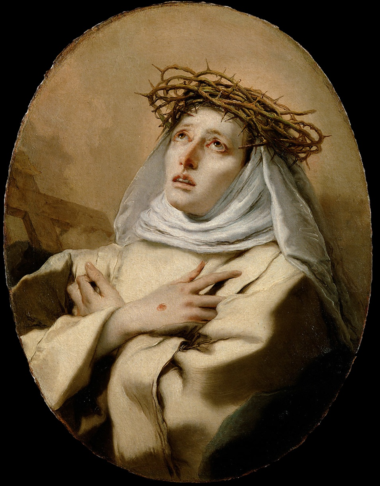
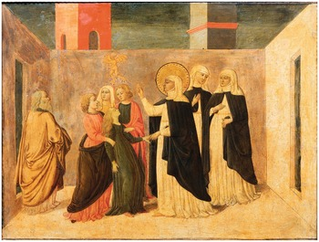

The Saint
St. Catherine of Siena was born during the outbreak of the plague in Siena, Italy on March 25, 1347. At the age of 16 her sister died, leaving her husband as a widower. Catherine's parents proposed that she replaced her sister as wife, but she strongly opposed this. She began fasting and cut her hair short to mar her appearance. She then joined the Third Order of St. Dominic, in which she did not have to join a convent but could live among society and practice the faith. At the age of 21 she described having a mystical experience in which she had a mystical marriage to Christ. After this, her holiness increased and she went on to become the first woman doctor of the Church.
The Encounter - Prayer Warrior
St. Catherine came face to face many times with the enemy. She was spiritually strong enough to be able to pray over many possesed people and free them. She even began to give the devil a nickname: "pickpocket." As she said that the devil was trying to pickpocket many souls. She was a brave soul who even at the moment of her death, battled many evil spirits trying to make her fear. But she continued to pray and ask God for mercy. She even told those around her to forgive her for not caring about their salvation more. At the moment of her death, her face expressed joy. And her body remained uncorrupted until she was laid to rest.